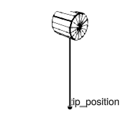

Introduction
This tutorial will give an overview of the package so that you can be proficient in building mechanisms, simulating, plotting and controlling robots.
What is a Mechanism?
You can think of a Mechanism as a robot. There are three main parts to a mechanism. First is the rigid body tree, which should be familiar if you have worked with robot simulation before. This is composed of reference frames and joints (e.g. Revolute or Prismatic). This rigid body tree defines the set of minimal/generalized coordinates that define the state of the robot–think $q$, $\dot q$: the joint angles/ velocities.
using VMRobotControl, StaticArrays
mechanism = Mechanism{Float64}("MyRobot")
add_frame!(mechanism; id="L1")
axis = SVector(0.0, 1.0, 0.0)
add_joint!(mechanism, Revolute(axis); parent="root_frame", child="L1", id="J1")
mechanism1DOF Mechanism{Float64} "MyRobot" with 2 frames, 1 jointSecond are the mechanism's coordinates. These are extra geometric points/ features of interest derived from the state of the rigid body tree. The simplest coordinate might be the FramePoint which represents a fixed point in a particular reference frame.
tip_offset = SVector(0.0, 0.0, -1.0)
add_coordinate!(mechanism, FramePoint("L1", tip_offset); id="tip_position")
mechanism1DOF Mechanism{Float64} "MyRobot" with 2 frames, 1 joint, 1 coordinateFinally we have components, which include mass, inertia, springs, dampers and inerters, among others. Here we add a pointmass to the tip of our pendulum.
add_component!(mechanism, PointMass(1.0, "tip_position"); id="tip_mass")
mechanism1DOF Mechanism{Float64} "MyRobot" with 2 frames, 1 joint, 1 coordinate, 1 componentFinally, we might wish to plot and simulate our mechanism. The details of how to do this are explained later, but here is an example.
using GLMakie
fig = Figure(size=(200, 200))
ls = LScene(fig[1, 1]; show_axis=false)
m = compile(mechanism)
kcache = Observable(new_kinematics_cache(m))
root_frame_id = get_compiled_frameID(m, "root_frame")
coord_id = get_compiled_coordID(m, "tip_position")
robotsketch!(ls, kcache; linewidth=2.0)
scatterlines!(ls, kcache, [root_frame_id, coord_id]; color=:black, linewidth=2.0)
text!(ls, kcache, coord_id; text="tip_position")
save("pendulum.png", fig)
using DifferentialEquations
dcache, gravity = new_dynamics_cache(m), VMRobotControl.DEFAULT_GRAVITY
q, q̇, tspan = [1.0], [0.0], 10.0
prob = get_ode_problem(dcache, gravity, q, q̇, tspan)
sol = solve(prob)
animate_robot_odesolution(fig, sol, kcache, "animation.mp4")
nothing
In the following sections you will learn how to
- build a mechanism
- compile a mechanism for kinematics/dynamic computations
- make a virtual mechanism system
- plot mechanisms/virtual mechanism systems with
Makie.jl - simulate mechanisms/virtual mechanism systems with
DifferentialEquation.jl - perform realtime control
- do AD/Optimization with
ForwardDiff.jlorEnzyme.jl